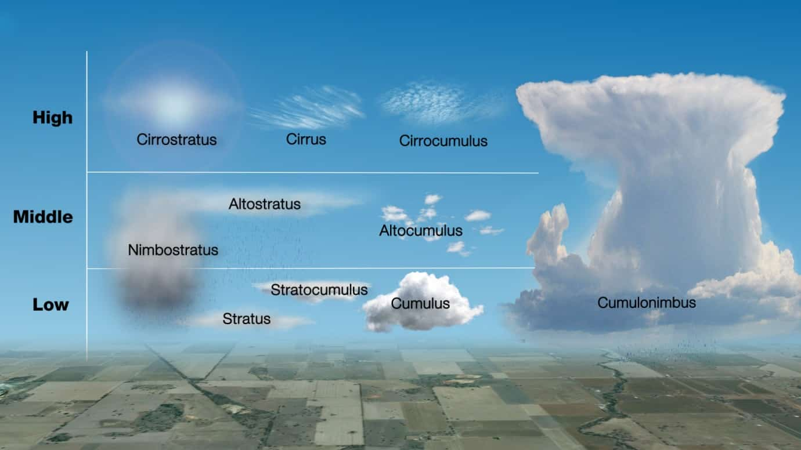

<!-- .slide: data-background="lightning.jpg" --> # Weather <!-- .element: style="background-color: #00000099; border-radius: 0.5em" --> Tyler Akins (Instructor) <!-- .element: style="background-color: #00000099; border-radius: 0.5em; display: inline-block; padding: 0.2em 0.6em" --> --- ## Expectations ---- <!-- .slide: data-background="on-my-honor-coin.jpg" data-background-size="cover" --> <div style="background-color: #004466AA; border-radius: 0.5em"> ## Scout-Like Behavior Respectful and engaged, otherwise you will be asked to leave. </div> ---- ## Like College, Not High School With college, you pay the instructor to teach. It's up to the student to learn. ---- ## Not Prepared? Don't know? Didn't do something in advance? Just let me know and we can move on. ---- ## Participation Is Expected --- ## What is Meteorology? ---- ## What is weather? ## What is climate? ---- How does weather affect: Farmers, Sailors, Aviators,<br /> Outdoor construction industry Why are weather forecasts important to each group? --- ## Dangerous Weather * 5 dangerous weather-related conditions * Safety rules for each when outdoors ---- <!-- .slide: data-background="lightning-storm.webp" data-background-size="cover" --> ---- <!-- .slide: data-background="tornado.png" data-background-size="cover" --> ---- <!-- .slide: data-background="hail.jpg" data-background-size="cover" --> ---- <!-- .slide: data-background="wind.webp" data-background-size="cover" --> ---- <!-- .slide: data-background="floods.jpg" data-background-size="cover" --> ---- <!-- .slide: data-background="heat-wave.jpg" data-background-size="cover" --> ---- <!-- .slide: data-background="severe-cold.webp" data-background-size="cover" --> ---- What's the difference between a severe weather watch and a warning? ---- "Discuss the safety rules with your family." I'm not family. --- ## Weather Forecasts What sources of weather forecasts do you use? What sources of emergency weather warnings exist? --- ## Pressure Systems Explain high and low pressure systems in the atmosphere. ---- <!-- .slide: data-background="pressure-systems.jpg" data-background-size="contain" --> ---- Which type of pressure system is related to good weather? Which one relates to poor weather? ---- Draw cross sections of a cold front and a warm front, showing the location and movements of the cold and warm air, the frontal slope, the location, and types of clouds associated with each type of front, and the location of precipitation. ---- <!-- .slide: data-background="cold-front.webp" data-background-size="contain" data-background-color="#b9e7ff" --> ---- <!-- .slide: data-background="warm-front.webp" data-background-size="contain" data-background-color="#fad5a5" --> --- ## Storm causes ---- What causes wind? ---- Why does it rain? ---- How is lightning formed? ---- How does hail form? --- ## Clouds ---- 5 types of clouds Where they hang out (low, middle, or upper levels of the atmosphere) What kind of weather they indicate ---- <!-- .slide: data-background="cloud-types.jpg" data-background-size="contain" --> ---- <table><tr><td width="75%"> <p></p> </td><td width="25%"> Fair Weather Cirrus, Cirrocumulus, Cirrostratus, Cumulus, Stratocumulus </td></tr></table> ---- <table><tr><td width="75%"> </td><td width="25%"> Rain, drizzle, or snow Nimbostratus, Stratus </td></tr></table> ---- <table><tr><td width="75%"> </td><td width="25%"> Thunderstorms and Severe Weather Altocumulus, Altostratus, Cumulonimbus </td></tr></table> --- ## Water Cycle Draw a diagram of the water cycle and label its major processes. Explain the water cycle to your counselor. ---- <!-- .slide: data-background="water-cycle.jpg" data-background-size="contain" --> --- Identify some human activities that can alter the environment, and describe how they affect the climate and people. --- Describe how the tilt of Earth's axis helps determine the climate of a region near the equator, near the poles, and across the area in between. ---- <!-- .slide: data-background="earth-tilt.png" data-background-size="contain" data-background-color="white" --> --- # Projects Pick one: ---- Make one of the following instruments: wind vane, anemometer, rain gauge, hygrometer. Keep a daily weather log for one week using information from this instrument as well as from other sources such as local radio and television stations, NOAA Weather Radio All Hazards, and internet sources (with your parent or guardian's permission). Record the following information at the same time every day: wind direction and speed, temperature, precipitation, and types of clouds. Be sure to make a note of any morning dew or frost. In the log, also list the weather forecasts from radio or television at the same time each day and show how the weather really turned out. <!-- .element: style="font-size: 0.8em" --> ---- <!-- .slide: data-background="wind-vane.webp" data-background-size="contain" --> ---- <!-- .slide: data-background="anemometer.webp" data-background-size="contain" --> ---- <!-- .slide: data-background="rain-gauge.webp" data-background-size="contain" --> ---- <!-- .slide: data-background="hygrometer.webp" data-background-size="contain" --> ---- Visit a National Weather Service office or talk with a local radio or television weathercaster, private meteorologist, local agricultural extension service officer, or university meteorology instructor. Find out what type of weather is most dangerous or damaging to your community. Determine how severe weather and flood warnings reach the homes in your community. ---- Give a talk of at least five minutes to a group (such as your unit or a Cub Scout pack) explaining the outdoor safety rules in the event of lightning, flash floods, and tornadoes. Before your talk, share your outline with your counselor for approval. --- ## Careers "Explore careers related to this merit badge. Research one career to learn about ..." ---- * Training and education needed * Costs * Job prospects * Salary * Job duties * Career advancement What about this profession might make it an interesting career? --- # THE END ### Thank you! *You survived!* <!-- .element style="font-size: 0.6em" --> ---- Tyler Akins <table><tr><td> 12650 130th Ave N<br> Dayton, MN 55327 </td><td> 612-387-8102 <br> fidian@rumkin.com </td></tr></table>